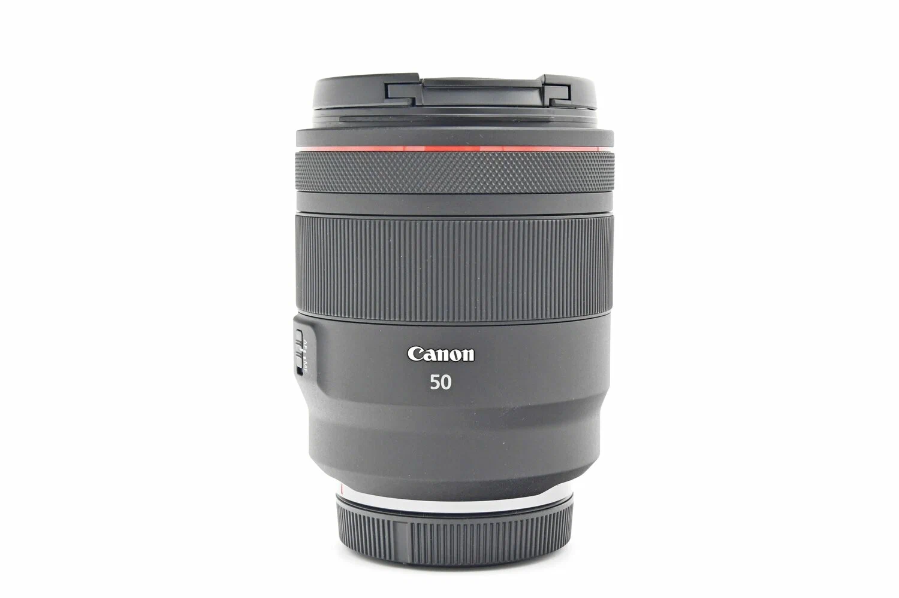
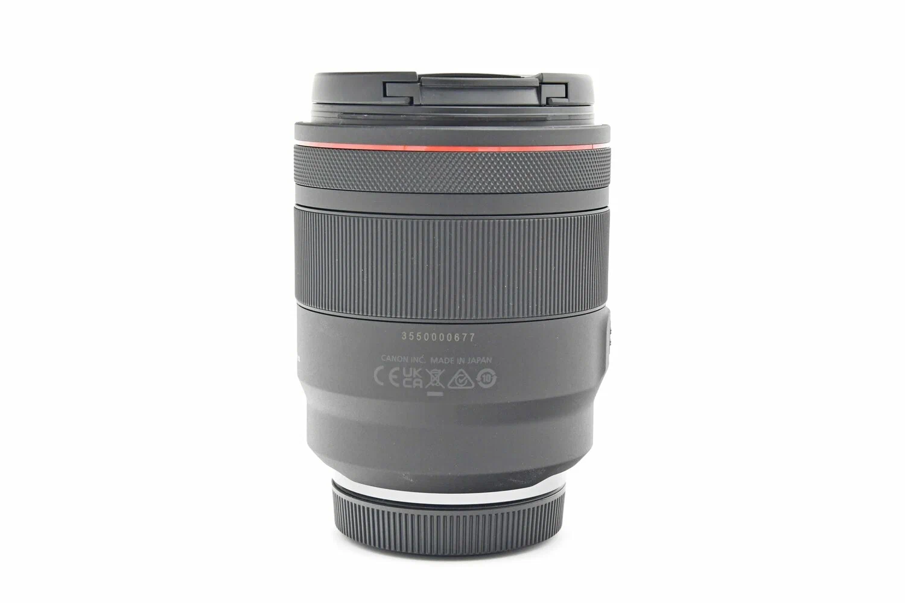
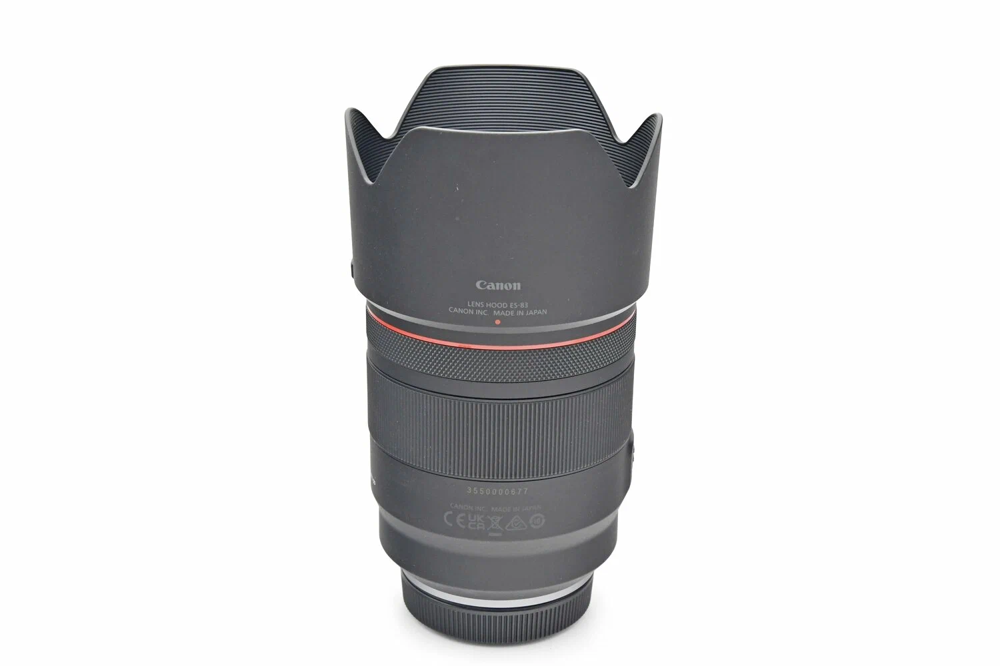
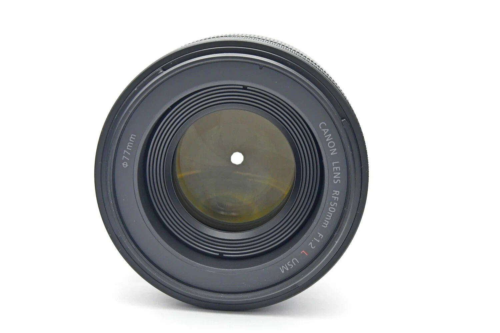
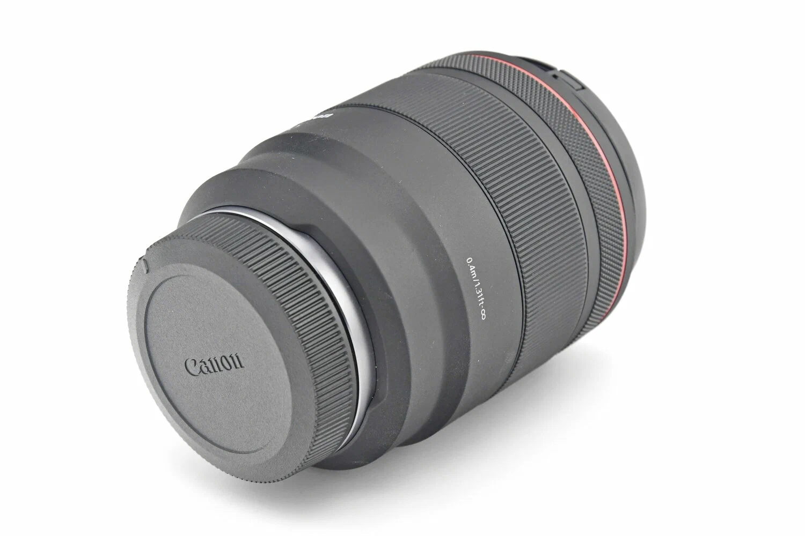
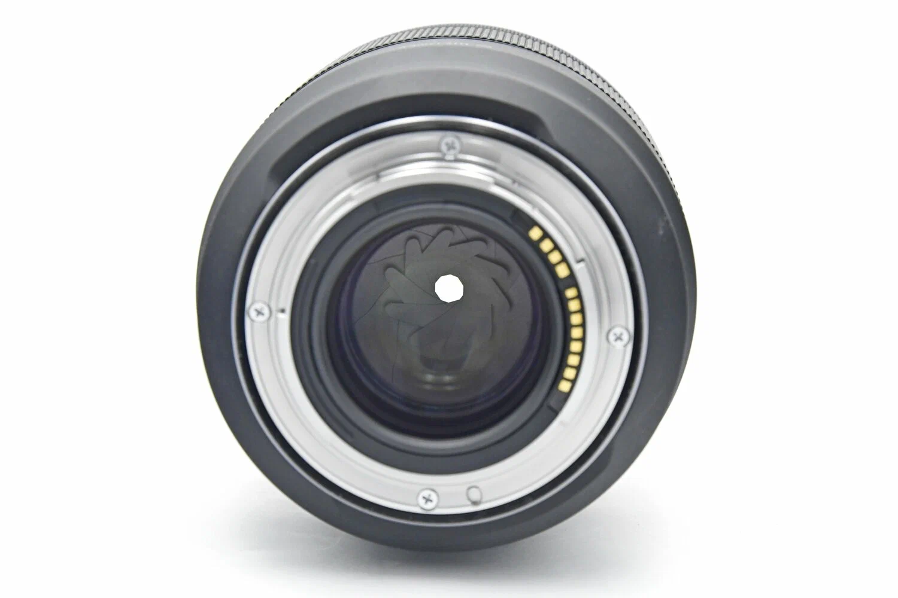
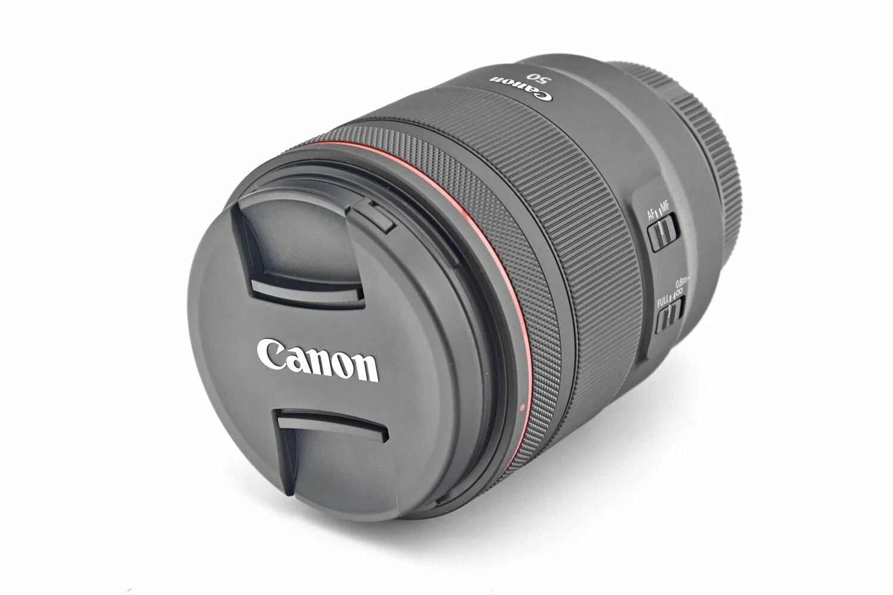

Canon Lens 50 mm RF 1.2F
The Canon RF 50mm F1.2L USM is a fixed lens designed for Canon's RF mirrorless camera system. It offers a maximum aperture of f/1.2, allowing for excellent low-light performance and creating a shallow depth of field.
Canon Lens 50 mm RF 1.2F
The Canon RF 50mm F1.2L USM is a fixed lens designed for Canon's RF mirrorless camera system. It offers a maximum aperture of f/1.2, allowing for excellent low-light performance and creating a shallow depth of field. The lens features an advanced optical design to reduce ghosting, as well as an Air Sphere Coating to reduce flicker. The autofocus system relies on a USM motor for greater accuracy and speed, and it features excellent build quality with dust and moisture protection. The lens is specifically designed to be compatible with Canon mirrorless cameras, and delivers excellent image quality, especially for portrait photography.
999$






